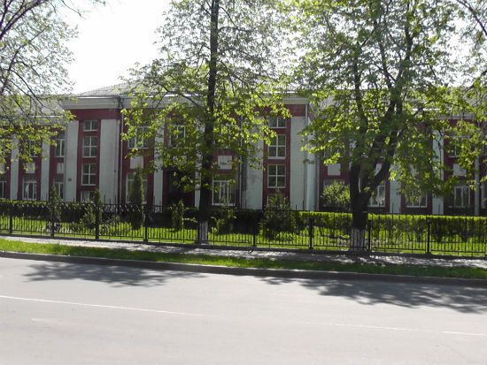
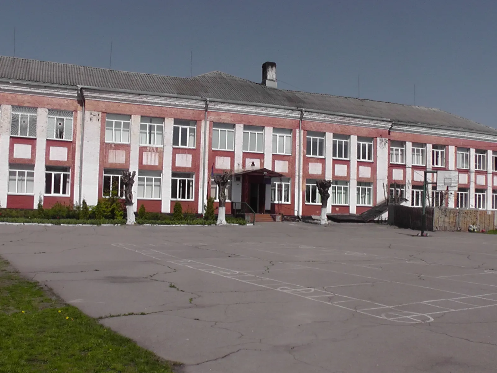

Уманська гімназія №1

Загальноосвітній навчальний заклад, який знаходиться в місті Умань, Черкаська область1. Гімназія має офіційну сторінку на Facebook2, де ви можете знайти більше інформації та останні новини.Вони також мають офіційний сайт3, де вони діляться відео про життя в гімназії.

Будь ласка, зверніть увагу, що ця інформація може бути застарілою або неповною. Для отримання найновішої та найточнішої інформації рекомендується звертатися безпосередньо до Уманської гімназії №1